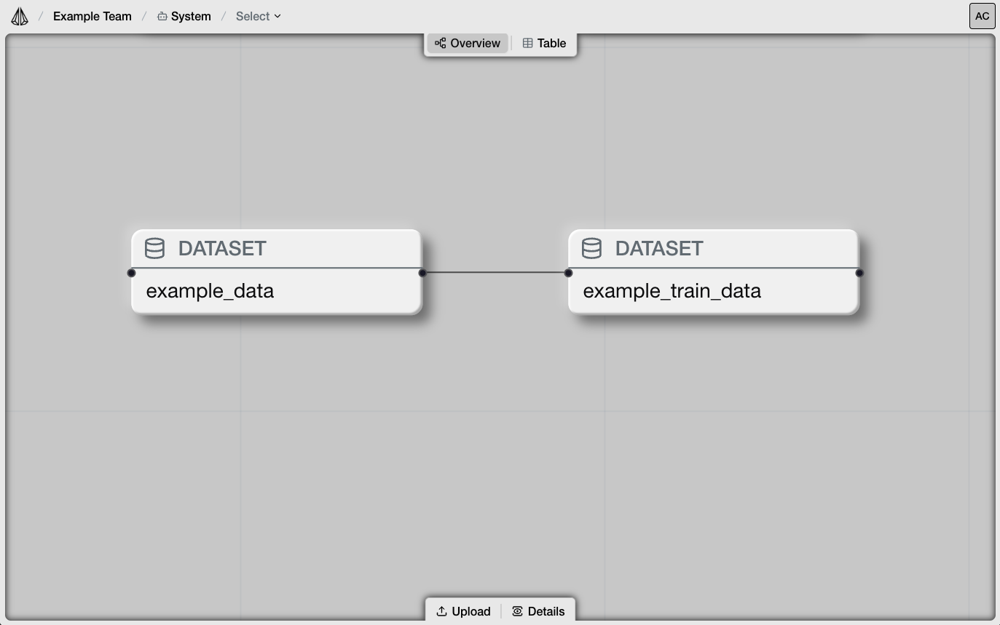
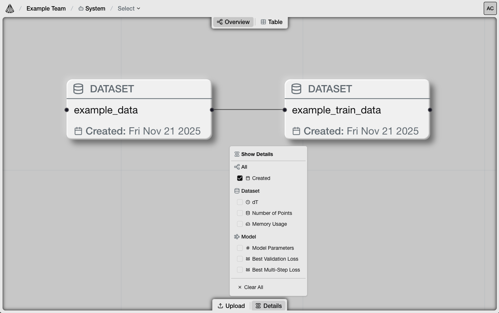
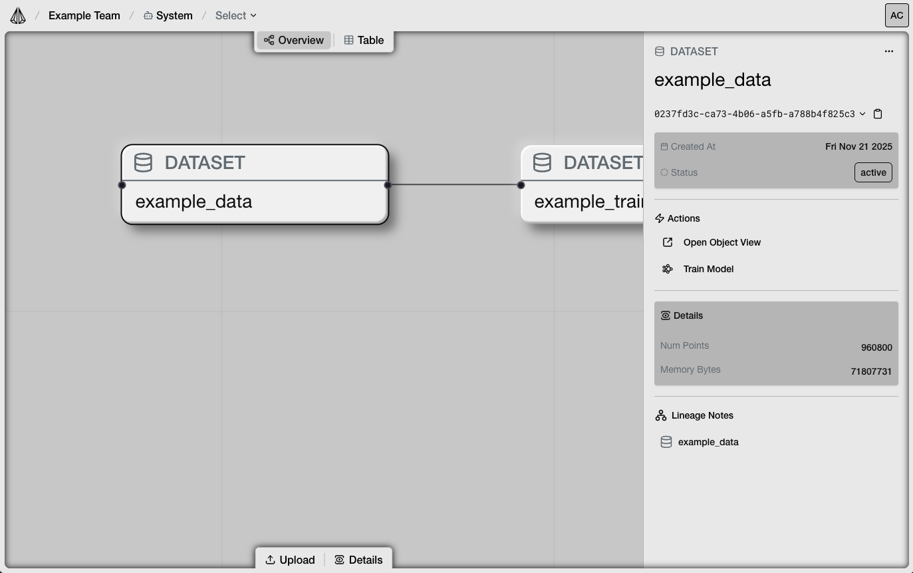
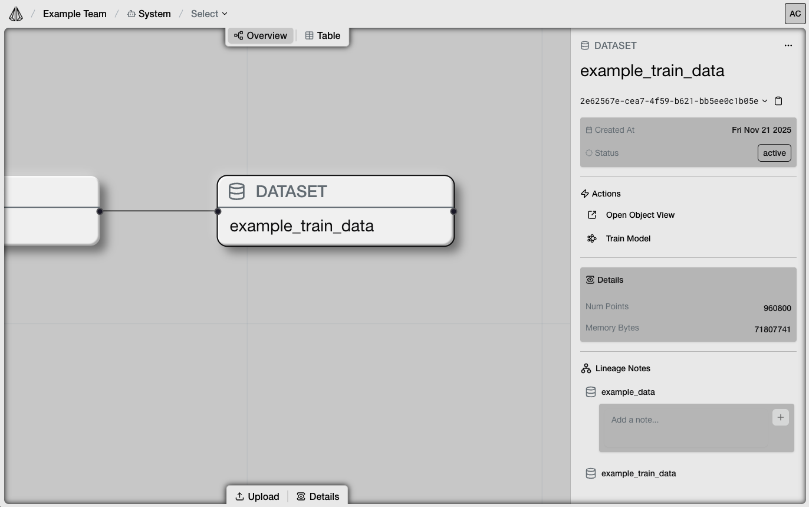
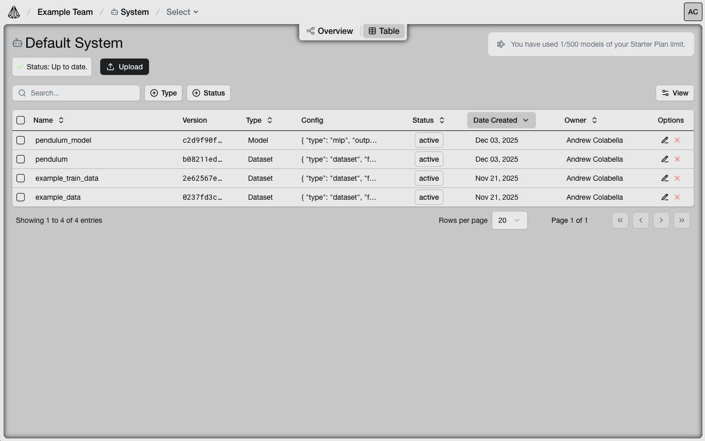

System
System Overview
The System Overview is a visualization of the full lineage of datasets and models in your system. Collaborate with your team on all the objects in your system and quickly view details at a high level.
Node Graph
{kind=link}

The Node Graph visualizes all objects in your system. Objects are Datasets and Models. Nodes in the node graph are organized by lineage connecting models to the datasets they were trained from. Node lineages will appear top to bottom by most recently added.
Objects in the Onyx Engine have a name and ID. Objects with the same name will be consolidated into one node in the node graph and are interpreted as versions of that object.
Clicking on the name of an object on the node will take you to the detailed object view.
Details
{kind=link}

You can toggle additional details on the nodes in the node graph by clicking on the “Details” button on the bottom tool menu. The Details menu contains parameters that can be toggled visible and displayed on the nodes in the node graph like created date, dt, and memory usage.
Inspector
{kind=link}

The Inspector is a quick way to gather information about a node in the node graph. Click on a node to select it. Selecting the object will open the inspector panel on the right side of the overview.
In the Inspector, you’ll find the following details:
Object type (i.e. Dataset, Model)
Object name
Object versions
Created date and status
Configuration details
Lineage Notes
You can rename/delete an object by clicking on the three-dot menu in the top right corner of the inspector panel.
Lineage Notes
{kind=link}

Lineage notes are your team’s tool to enter details about the history of the objects in your node graph. A lineage note can exist on an edge between two nodes. For example, you can enter a lineage note between a dataset and the model that was trained from that dataset. You can use these notes to document details about decisions made to train different models from your datasets.
To view the lineage notes for an object, click on a node in the node graph to open the Inspector panel. Scroll down to the Lineage Notes section of the Inspector.
In the Lineage Notes section of the Inspector, you’ll see the list of ancestor objects in the hierarchy that lead to the creation of the selected object.
To add a note, click on the text box in between two objects and type your note. Once finished, click the plus button to save the note.
System Table
{kind=link}

The System Table is a complete table of object versions and their high level metadata across your entire system. To access the System Table, click the “Table” button near the top bar from the Overview.
From the table, you can:
View all datasets and models across all versions
Search by name
Filter by type and status
Toggle column visibility
Rename/delete objects
Upload a new dataset
Table Columns
Name
Version
The version ID of a specific object. An object with one name can have multiple versions.
Type
The type of the object, either Dataset or Model.
Config
The configuration parameters and data for the object, including fields like “features” and “dt”.
Status
For Datasets:
Raw (unprocessed data)
Processing (data currently being processed)
Failed (processed data with errors/issues)
Active (processed data ready for AI model training)
For Models:
Training (a currently training AI model)
Optimizing (a currently optimizing AI model)
Active (a trained AI model)
Date Created
Owner
The creator of the object.
Options
Rename
Delete